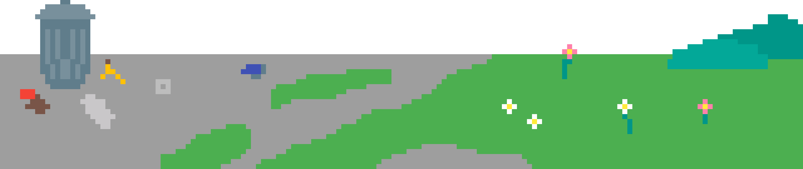

Home
Resources
About
Resources
Find the Closest Landfill and Recyling Centers:
"https://www.wm.com/us/en/drop-off-locations"
What Can be Recycled?
"https://www.epa.gov/recycle/how-do-i-recycle-common-recyclables"
Impacts of Mismanaged Trash:
"https://www.epa.gov/trash-free-waters/impacts-mismanaged-trash"
How to Participate in a Trash Cleanup Safely:
"https://www.litterbegone.org/safety-tips/"
